Менеджер вводит габариты помещения — или просто фотографирует лист замерщика. Через пять минут у него на руках КП с планом расстановки, трёхмерной моделью, спецификацией до анкера и суммой, которую невозможно вписать руками.
Принцип работы · схема · инструменты · расход · инструкция · промпты · реальные результаты.
Генератор — закрытый кабинет на raxpro.uz/kp. Он не помогает оформить КП красивее. Он забирает у менеджера ту часть работы, где человек ошибается: расстановку, спецификацию, арифметику и факты о компании. Менеджеру остаётся разговор с клиентом и решение по цене.
Прошлое КП открывали, меняли название клиента и числа. Всё, что не заметили, уезжало клиенту вместе с документом: чужая сумма, чужой срок, чужая скидка.
Факты компании подставляются из справочника, спецификация считается формулами, НДС и скидка — арифметикой, а перед выпуском документ проходит приёмку из 23 правил.
Раньше план расстановки рисовали в 3ds Max, и КП ждало проектировщика. Теперь раскладку считает сам генератор и рисует её прямо в документ.
| Шаг работы | Как было | Как стало |
|---|---|---|
| План расстановки | Ждали проектировщика с 3ds Max: очередь, день-два, иногда неделя. | Кнопка в кабинете. План с размерами появляется в документе сразу. |
| Спецификация | Считали руками или копировали из прошлого КП вместе с чужими числами. | Семь формул из геометрии. Замки и анкеры проверяются отдельно. |
| Сумма и НДС | Вписывали. Скидку ставили без основания. | Считается. Скидка без причины блокирует выпуск. |
| Факты компании | Жили в десятке копий Word-файла и расходились между собой. | Один справочник на все КП. Стаж считается от года основания. |
| Картинка склада | Брали рендер прошлого объекта — чужую расстановку. | Кадр этой расстановки: столько же рядов и ярусов, сколько в смете. |
| Проверка перед отправкой | Перечитывали глазами, если успевали. | 23 правила приёмки при каждом изменении формы. |
| История предложений | Не велась вообще. | Реестр: номер, клиент, продукт, сумма, автор. |
Модель читает почерк замерщика и предлагает варианты расстановки. Ярусы, зазоры, количество рам, спецификацию, цену и приёмку считает код. Ни одна цифра, попадающая в КП, не приходит от нейросети. Основание — августовский прогон: на явное «восемь рядов» модель вернула шесть.
Генератор собран не из головы. Сначала мы прочитали семь коммерческих предложений, которые RaxPro отправил клиентам за 2026 год, и выписали каждую ошибку. Каждое правило приёмки в коде подписано тем КП, из которого оно родилось.
| Что стояло в документе | В каких КП | Что видит клиент |
|---|---|---|
| «ISO g001:2015» вместо 9001 | во всех семи | Сертификата с таким номером не существует. Первое, что проверит осторожный закупщик. |
| Опыт 2, 3 и 4 года | Fathulla · Lion Print · Doniyor | Документы одного месяца называют разный возраст компании. |
| Клиентов «150», «200», «300» | Rapid Sales · Fathulla · Sika | Число росло от письма к письму — значит, оно ничего не значит. |
| Балка «33000×1200» | Lion Print, КП на 843 млн | Балка длиной 33 метра. В самом дорогом предложении года. |
| «50 % + 50 %» и «100 % предоплата» | Fathulla, стр. 9 и 10 | Две схемы оплаты в одном документе на соседних страницах. |
| Скидка 15 % и 20 % без причины | BLOOMSHOP · Sika · Lion Print | Скидка без основания читается как «цена была завышена». |
| Пустое «К: « »» в шапке | Rapid Sales | Не подставили название клиента — документ ушёл как есть. |
| Нет паллето-мест и цены за место | все семь | Единственная величина, по которой клиент сравнивает поставщиков, в КП отсутствовала. |
КП делали копией прошлого документа. Человек правит четыре очевидных поля — название, сумму, дату, продукт — и не перечитывает остальные двенадцать страниц. Ошибка живёт в шаблоне и размножается с каждым новым клиентом.
Каждая строка таблицы слева стала правилом в validate.ts. Семь из восьми блокируют выпуск документа: кнопка «Скачать PDF» не работает, пока замечание не снято. Восьмое — предупреждение.
Из семи КП в шести повторяются одни и те же двенадцать страниц: обложка, «что вы получаете», о компании, сертификаты, этапы, гарантия. Уникальны в каждом документе ровно две — план объекта и спецификация. Ради них клиент и открывает файл. Поэтому генератор делает сильной именно эту пару, а остальные страницы собирает сам.
Граница между кодом и нейросетью · схема от замера до PDF · три движка раскладки · формулы спецификации · цена · приёмка · картинка в три слоя.
Это главное решение всей системы. Нейросеть работает там, где человеку тяжело, а ошибка дешёвая: разобрать почерк, предложить варианты, написать абзац. Там, где ошибка стоит денег клиента, считает код — детерминированно, одинаково при каждом нажатии.
В августе мы дали модели прямое, однозначное задание: «восемь рядов». Она вернула шесть. Не потому что плохая — потому что у неё нет обязанности быть точной, а у спецификации на 1,2 млрд сум она есть. После этого прогона правило записали в код: любая величина, которую клиент увидит в таблице, приходит из формулы.
| Вопрос | Ответ «да» → нейросеть | Ответ «нет» → код |
|---|---|---|
| Ошибка здесь заметна человеку сразу? | Криво прочитанная подпись видна в списке «что распознано». | Лишние 20 рам в смете не видны никому до монтажа. |
| Задача про восприятие или про арифметику? | Разобрать почерк, узнать «215 sm» — восприятие. | Поделить потолок на высоту яруса — арифметика. |
| Нужен один и тот же ответ при каждом запуске? | Нет: вариантов расстановки может быть несколько. | Да: одна и та же форма обязана дать ту же сумму. |
Формулы спецификации прогоняются регрессией на шести фактических КП: lib/rack/regression.mjs. Расхождение с готовым документом — до 1 %.
Одни и те же входные данные всегда дают один и тот же документ. КП, открытое через год, пересчитается тем же ядром и покажет ту же сумму.
Черновые числа не прячутся в расчёте: каждый тип возвращает список assumptions, и приёмка показывает его менеджеру списком.
Восемь шагов. Зелёным отмечены те, где работает нейросеть — их ровно два, и оба необязательные: без них генератор считает так же, просто менеджер вводит габариты руками.
Замерщик выезжает и рисует помещение на листе: контур, метры, колонны, ворота.
Менеджер фотографирует набросок. Модель снимает геометрию и подписи. Необязательно.
Габариты, потолок, шаг колонн, техника, длина балки, вес паллеты.
Ядро подбирает ориентацию рядов, проход, ярусы и рисует план.
Рамы, балки, замки, анкеры, защита — формулами из геометрии. Паллето-места.
Сумма по позициям, скидка с причиной, НДС 12 %, цена за паллето-место.
3D-сцена превращается в фотореалистичный снимок склада. Необязательно.
Приёмка → PDF, ссылка для клиента или печать → запись в реестр.
Менеджер вводит: название клиента, тип стеллажа, язык документа, габариты помещения, цены за единицу и условия. Это шесть полей и два числа. Всё остальное — 141 секция, 846 балок, 1692 замка, 600 анкеров — считается само.
Шаг 08 не выполнится, пока приёмка держит хоть одно блокирующее замечание. Это не окно с вопросом «вы уверены?» — кнопка выпуска просто не срабатывает, а список замечаний висит вверху экрана всё время работы.
Единственный шаг вне кабинета. Дальше всё происходит за одним экраном.
Необязательный шаг. Без него габариты вводятся руками за минуту.
Считается в браузере. Здесь раньше стоял проектировщик с очередью задач.
Фотореализм 60–90 секунд, PDF и ссылка — сразу.
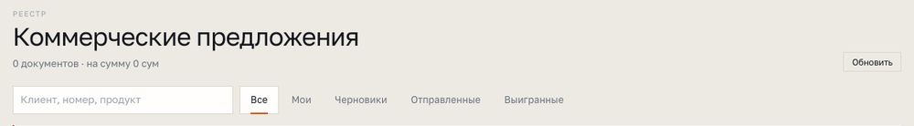
Это та работа, ради которой раньше ждали проектировщика с 3ds Max. Сейчас она занимает доли секунды и делается прямо в браузере менеджера.
Если ярусы упёрлись не в потолок, а в предел рамы 6000 мм, генератор говорит об этом прямо в интерфейсе и предлагает считать мезонин — второй уровень хранения. Это не ошибка, а другой продукт, и менеджер должен узнать о нём до звонка клиенту, а не после.
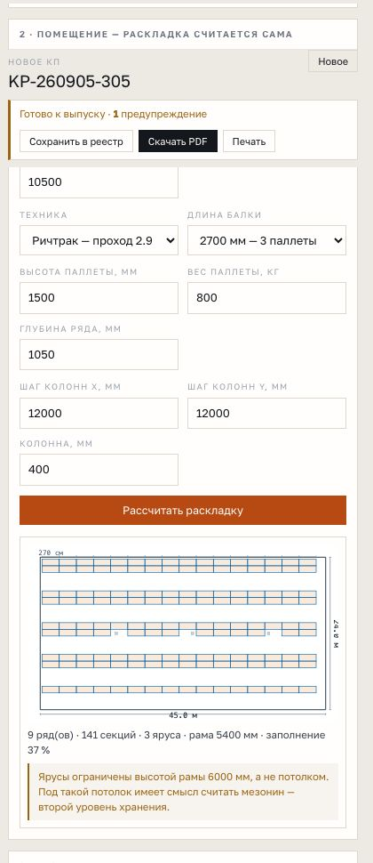
Раньше каждый вызывающий сам решал, что делать с типом: конструктор знал только паллетный, кабинет — паллетный и прайсовые, а набивной и мезонин не считались нигде. Теперь движок выбирается по паспорту типа, и снаружи все шесть выглядят одинаково.
| Тип | Движок | Кто обслуживает | Проход | Чем меряется результат |
|---|---|---|---|---|
| Паллетный фронтальный | ряды | Ричтрак · штабелёр · погрузчик | 2900 мм | Паллето-места. Прямой доступ к каждой паллете. |
| Паллетный набивной | каналы | Ричтрак · штабелёр | 2900 мм | Паллето-места. Проходов внутри блока нет вовсе — в этом смысл типа. |
| Среднегрузовой | ряды | Человек с тележкой | 1000 мм | Полки. Ручная укладка, настил 5 листов на ярус. |
| Архивный | ряды | Человек без тележки | 800 мм | Полки. Глубина 300–400 мм под короб, продаётся комплектом. |
| Торговый | ряды | Покупатель с корзиной | 1200 мм | Полки. Пристенный контур плюс островные двусторонние ряды. |
| Мезонин | плита | Человек | — | Квадратные метры плиты. Ни рам, ни ярусов — колонны, балки, настил, ограждение, лестницы. |
Линии секций с проходом между ними. Четыре типа из шести. Считает ориентацию, обход колонн, спину к спине, ярусы и паллето-места либо полки.
Блок каналов вплотную, техника въезжает внутрь. Стойка каждые 1200 мм — по ширине паллеты. Паспортные глубины 2700 / 4000 / 5400 мм — это 2, 3 и 4 паллеты вглубь.
Мезонин продаётся не секциями, а площадью. Спецификация другая по форме: колонны по сетке, две очереди балок, настил в м², ограждение в погонных метрах, лестницы.
Проход задаёт не дизайнер склада, а техника, которая в него въезжает. Вилочный погрузчик требует 3800 мм, ричтрак — 2900, штабелёр — 2500. Разница между погрузчиком и ричтраком на складе 45 × 24 метра — это несколько дополнительных рядов, то есть сотни паллето-мест. Поэтому вопрос «какая у вас техника» стоит в форме вторым, а не последним.
Набивной плотнее фронтального — но сравнение зависит от того, с чем сравнивать. Против ричтрака с проходом 2,9 м выигрыш скромный. Против вилочного погрузчика с проходом 3,8 м — заметный, и это довод для КП. Генератор считает обе раскладки в одном и том же помещении и показывает разницу числом, а не словами.
Каждый тип носит с собой список запретов, и они доходят до приёмки дословно. Мезонин под потолком 4 метра — отказ: под плитой не останется рабочей высоты. Набивной с непаспортной глубиной канала — отказ с перечислением допустимых. Отказ честнее неверного числа: по этому документу компания выставит счёт на сотни миллионов сум.
Это сердце системы. Один файл описывает каждый тип стеллажа так, что из него читают сразу четверо: ядро раскладки, спецификация, промпт для нейросети и приёмка. Поменялось правило — поменялось везде одновременно, а не в четырёх местах поодиночке.
| engine | Каким движком раскладывать: ряды, каналы или плита. |
| movers | Кто обслуживает тип — от этого ширина прохода, а не от привычки. |
| backToBack | Можно ли ставить ряды спиной к спине. |
| wallGap | Зазор до стены: 300 мм обычно, 200 мм в архиве. |
| depthMeans | Что значит «глубина» у этого типа: ряд, канал или плита. |
| channelDepths | Паспортные глубины канала и сколько паллет в них влезает. |
| forbid | Что делать нельзя. Уходит в приёмку и в промпт модели дословно. |
| assumed | Какие числа здесь черновые. Список видит менеджер, а не только программист. |
| notes | Откуда взято правило: номер темы и сообщения в рабочей группе RaxPro. |
Ни одного КП на набивной в архиве компании нет — эти два числа выведены из геометрии, а не из документа, и обязаны попасть в приёмку.
Шаг стойки 1200 мм — по ширине паллеты — и глубины 2700 / 4000 / 5400 мм взяты из переписки инженеров RaxPro с указанием темы и номера сообщения. Ни одно число не пришло из интернета.
Берёт движок, проход и зазор — и раскладывает помещение. Не знает, какой это тип: спрашивает у паспорта.
Список типов и запретов уходит в задание модели дословно. Появился тип — модель узнаёт о нём в тот же день.
Запреты и черновые допущения становятся замечаниями менеджеру, а не комментариями в коде.
Проверяются не конкретные числа — половина из них поедет, как только RaxPro пришлёт прайс и чертежи. Проверяются инварианты, которые ломаться не должны никогда:
Четыре числа геометрии — и вся спецификация считается сама. Формулы не придуманы: они выведены обратным счётом из шести фактических КП и прогоняются на них регрессией. Расхождение с готовым документом — до одного процента.
Рам на один больше, чем секций в ряду: соседние секции делят общую раму. Балок вдвое больше произведения секций на ярусы — передняя и задняя. Замков вдвое больше балок — по одному на каждый конец.
Анкеров на раму — 4 или 8. В фактических КП встречаются оба варианта, и от чего это зависит, компания не ответила. Поэтому это поле формы, а не константа, и приёмка проверяет только то, что число кратно раме.
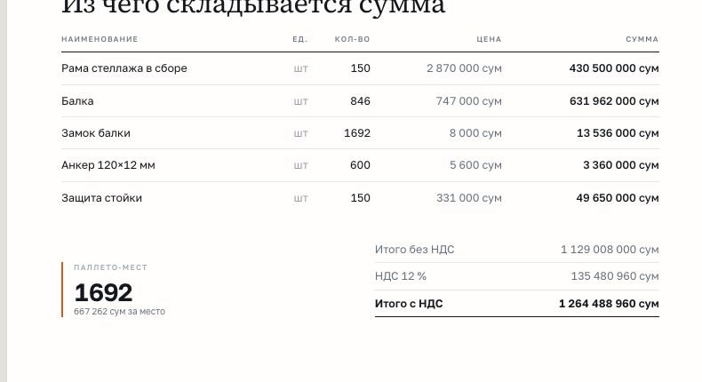
Три отношения, которые не зависят ни от типа, ни от прайса. Если хоть одно не сходится — смета собрана вручную, и её нельзя отправлять клиенту.
По одному замку на каждый конец балки. Других вариантов нет.
Соседние секции делят общую раму, поэтому рам на одну больше в каждом ряду.
Любое другое число означает, что позицию правили руками.
Раньше скидку ставили в документе руками: BLOOMSHOP −15 %, Lion Print 843 → 800 млн, Sika 35 → 28 млн — и ни одной строки о том, за что. Здесь скидка обязана иметь причину, а НДС считается, а не вписывается.
| Объём | Большой заказ. Причина попадает в документ рядом со скидкой. |
| Предоплата | 100 % вперёд — деньги стоят денег, и клиенту это видно. |
| Срок | Подписание до даты. Скидка исчезает вместе со сроком. |
| Повторный клиент | Работали раньше. |
| Решение директора | Требует комментария текстом — иначе печать блокируется. |
Единственная величина, по которой клиент сравнивает вас с конкурентом. Ни в одном из семи фактических КП её не было — клиент сравнивал по итоговой сумме, то есть по самому невыгодному для RaxPro числу. Теперь она стоит в документе отдельной строкой.
По позициям — когда есть прайс завода на раму, балку, замок и анкер. По прайс-листу секций — когда есть цена готовой секции; ряд делит рамы между соседями, поэтому сумма меньше, чем «секции × прайс».
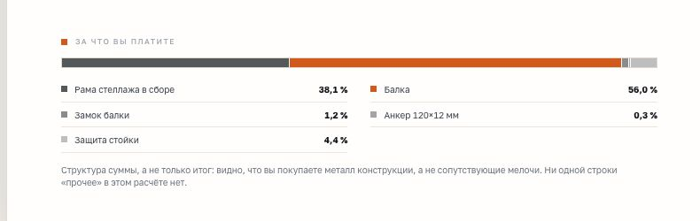
Торговый, набивной и мезонин помечены «цена под проект»: прайса на них компания не давала. Генератор не подставляет им выдуманную цену — он требует ввести её руками и блокирует выпуск, пока все позиции стоят в нуле.
| Что стоит в документе | Откуда берётся | Что было раньше |
|---|---|---|
| Сумма по позициям | Количество × цена | Переносили из прошлого КП вместе с чужими количествами. |
| Скидка | Процент + причина | Ставили процентом без строки о том, за что. |
| Итого без НДС | Сумма минус скидка | Иногда не сходилось с таблицей выше на той же странице. |
| НДС 12 % | Считается от итога | Вписывали. Приёмка теперь сверяет до одного сума. |
| Цена за паллето-место | Итог ÷ места | Не считали вообще ни в одном из семи КП. |
Четыре кнопки вверху кабинета — это реальные КП: Fathulla, Doniyor, BLOOMSHOP, Star Distribution. Пресет заполняет геометрию и показывает эталонную сумму. Если расчёт разошёлся с фактическим КП больше чем на 5 %, значит, цены за единицу устарели — это встроенный способ заметить, что завод поменял прайс, а вам не сказали.
Приёмка — последний рубеж перед клиентом. Полоса состояния висит вверху экрана всё время работы: красная — печать заблокирована, жёлтая — выпустить можно, но чего-то не хватает, зелёная — замечаний нет.
| Уровень | Замечание | Почему именно так |
|---|---|---|
| Блок | Не указан клиент | В КП Rapid Sales в шапке осталось пустое «К: « »». |
| Блок | Опечатка «ISO g001» | Стоит во всех семи фактических КП. Текст проверяется на неё при каждом вводе. |
| Блок | Опыт вписан числом в текст | 2, 3 и 4 года в документах одного месяца. Стаж считается от года основания. |
| Блок | Число клиентов вписано руками | 150 / 200 / 300 в разных КП. Берётся из справочника компании. |
| Блок | Замков не вдвое больше балок | Значит, спецификацию собрали вручную и она неверна. |
| Блок | Анкеров не 4 и не 8 на раму | То же самое: число не выводится из геометрии. |
| Блок | Рядов больше, чем секций | Такой геометрии не бывает. |
| Блок | Ярусов меньше 1 или больше 6 | Вне рабочего диапазона линейки. |
| Блок | Две схемы оплаты сразу | У Fathulla на стр. 9 «50 % + 50 %», на стр. 10 «100 % предоплата». |
| Блок | Скидка без причины | BLOOMSHOP, Lion Print, Sika — скидка стояла без обоснования. |
| Блок | НДС не 12 % от суммы | Ставка одна, и она считается, а не вписывается. |
| Блок | Нулевая цена за единицу | Пустая строка в таблице уезжает клиенту как «бесплатно». |
| Блок | Размер в пять и более цифр в тексте | Балка «33000×1200» у Lion Print — в КП на 843 млн. |
| Внимание | Скидка больше 25 % | Больше четверти суммы — нужно подтверждение директора. |
| Внимание | Нет цены за паллето-место | Единственная величина, по которой клиент сравнит вас с конкурентом. |
| Внимание | Нет плана объекта | В фактических КП план был одной из двух уникальных страниц. |
| Внимание | Нет рендера расстановки | Вторая из двух страниц, ради которых клиент открывает файл. |
| Внимание | В тексте нет сертификата | Сертификаты перечислены в справочнике — проверяется их наличие в документе. |
Она не проверяет, хорошее ли это предложение и понравится ли оно клиенту. Она проверяет ровно одно: нет ли в документе того, что уже уезжало клиентам раньше. Каждое новое КП с ошибкой добавляет сюда строку — список будет расти, и это нормально.
Клиент открывает КП ради двух страниц — плана и картинки. Соблазн велик: попросить нейросеть «нарисуй красивый склад». Тогда на листе «Решение» окажется склад, которого нет в смете. Так уже было в их старых КП. Поэтому каждая картинка вырастает из расчёта.
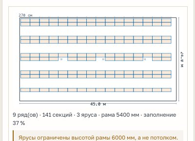
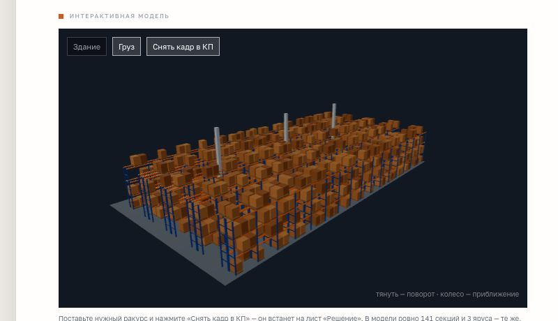
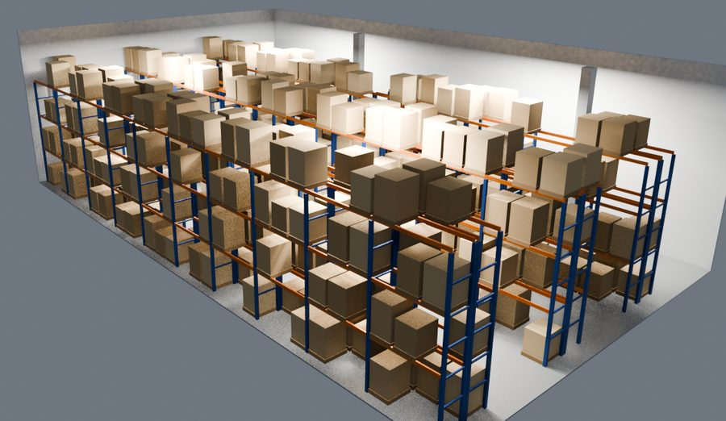
Генерация картинки с нуля по словам «шесть рядов, три яруса». Нейросеть нарисует убедительный склад, в котором рядов окажется семь, а проход — вдвое уже посчитанного. Клиент сверит картинку со сметой и не поверит ни ей, ни смете.
Снимок посчитанной 3D-сцены уходит как референс, а в задании стоит прямым текстом: «сохрани в точности ракурс, число рядов, ширину проходов, число ярусов и положение стеллажей — меняются только материалы, свет и детали».
Из чего собран генератор · два способа платить за нейросеть · мост на подписку · ключи, пароли и роли · сколько это стоит в месяц.
Генератор живёт внутри того же сайта, что и raxpro.uz — отдельного сервера, отдельного хостинга и отдельного счёта у него нет. Нейросети подключаются по одной на задачу, и каждая делает ровно одно дело.
| Инструмент | Что делает в генераторе | Чей счёт | Можно ли без него |
|---|---|---|---|
| Next.js · Vercel | Сам кабинет, расчёт, сборка документа и PDF на сервере. | Уже оплачен вместе с сайтом | Нет — это и есть генератор. |
| Хранилище Vercel Blob | Реестр КП, зашифрованные ключи, очередь заданий моста. | Копейки: задания живут минуты | Нет, если нужен общий реестр на всех. |
| Claude · Anthropic | Читает фотографию наброска и превращает её в геометрию склада. | Ключ RAX PRO, счёт от провайдера | Да — тогда габариты вводятся руками. |
| Gemini · Google | Собирает кадр расстановки. Подстраховывает чтение наброска, если ключа Claude нет. | Ключ RAX PRO, счёт от провайдера | Да — тогда в КП идёт кадр 3D-сцены без фотореализма. |
| Higgsfield | Тот же кадр, но на аккаунте владельца — запасной путь, пока у компании нет своих ключей. | Подписка владельца | Да, это временная подпорка. |
| Three.js в браузере | Трёхмерная модель расстановки, которую крутит менеджер и клиент по ссылке. | Бесплатно, работает у клиента | Нет — это вторая из двух уникальных страниц КП. |
| Blender · локально | Тяжёлый рендер сцены тремя кадрами, когда нужно качество для печати. | Бесплатно, на маке | Да, это ручной прогон, а не кнопка на сайте. |
строк кода в 61 файле: ядро расчёта, кабинет, документ, приёмка, мост.
Раскладка, спецификация, цена, приёмка и план — у клиента в браузере. Нейросеть нужна только для фото и фотореализма.
Предложение целиком лежит в самом адресе: на сервере не хранится, ссылка не протухает, часть после решётки вообще не уходит с устройства клиента.
| Если завтра перестанет работать | Что будет с генератором |
|---|---|
| Ключ Claude | Чтение наброска выключится и честно скажет об этом. Остальное работает. Если подключён Gemini — он подхватит распознавание. |
| Ключ Google | Кадр не будет фотореалистичным. В КП пойдёт снимок 3D-сцены — он и так строится из расчёта. |
| Мост на маке владельца | Ничего, если у компании есть свои ключи. Мост — подпорка на время, а не часть конструкции. |
| Интернет у менеджера | Раскладка, смета, цена и приёмка продолжат считаться: они работают в браузере. Не уйдут только PDF и запись в реестр. |
Каждая функция кабинета устроена так, чтобы честно выключаться. Нет ключа Claude — кнопка чтения наброска прямо говорит: «Не подключён ключ ИИ» и ведёт в настройки. Нет ключа Google — кадр не рисуется, но КП выпускается. Ни одна функция не падает молча и ни одна не тянет за собой остальные.
Ключей провайдера у RaxPro пока нет. Показывать кабинет с двумя мёртвыми кнопками нельзя, покупать баланс ради демонстрации — тем более. Поэтому есть третий путь: работу выполняет машина владельца на его подписке.
Менеджер нажимает «Прочитать набросок». Сервер кладёт задание в хранилище.
Задание лежит в закрытой папке. Это обычное хранилище кабинета, никаких туннелей.
Раз в полторы секунды забирает задания. Сам никого не слушает — только ходит наружу.
Результат кладётся обратно в хранилище, кабинет его забирает. Разницы менеджер не видит.
Мост работает, пока открыт ноутбук. Закрыли крышку — кнопка честно говорит, что чтение наброска сейчас недоступно, вместо того чтобы две минуты крутить ожидание при клиенте.
Как только RaxPro подключит свои ключи, настройки выигрывают автоматически, и эта ветка больше не вызывается. Ни одной правки в коде для перехода не нужно.
| Вид работы | Чем выполняется | Сколько идёт | Что возвращает |
|---|---|---|---|
| Чтение наброска | Claude на подписке владельца | ~3 минуты | Геометрию строго по схеме: контур, колонны, ворота, ряды, зоны. |
| Кадр расстановки | Higgsfield на аккаунте владельца | 60–90 секунд | Готовую картинку внутри документа, а не ссылку на чужой сервер. |
| Предложение расстановки | Codex на подписке владельца | в работе | 2–3 варианта раскладки на выбор, строго по JSON-схеме. |
Чтобы показать рабочий кабинет до того, как компания заведёт платные аккаунты. Решение о ключах принимается на живом инструменте, а не на описании.
Ничего особенного: те же две кнопки и тот же результат. Какой путь сработал — ключ компании или мост — в интерфейсе не отражается.
Вставить ключ в «Ключи ИИ». Настройки компании выигрывают автоматически, мост перестаёт вызываться. Правок в коде не нужно.
Картинка уходит в документ не ссылкой на сервер провайдера, а самим изображением. Ссылки провайдеров протухают за часы или дни — КП, открытое клиентом через неделю, показало бы пустой прямоугольник на самой важной странице. Поэтому кадр скачивается, ужимается до 1600 пикселей и вшивается в документ.
В кабинете видны цены за единицу и скидки — то, что не должно попадать ни к клиенту, ни в поиск. Поэтому страница закрыта от индексации, вход по паролю, а у каждого сотрудника свой.
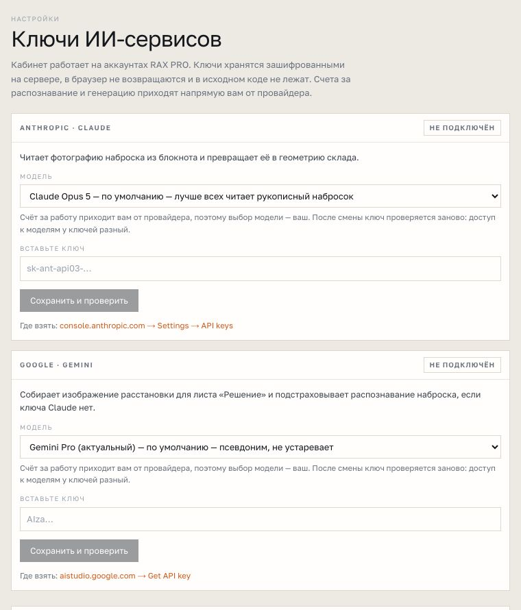
Владелец видит ключи и сотрудников. Менеджер делает КП. В реестре видно, кто именно выпустил документ — история предложений, которой у компании раньше не было вообще.
| Что закрыто | Как именно |
|---|---|
| Страница кабинета | Закрыта от индексации: в поиске её нет. Вход по паролю, у каждого сотрудника свой. |
| Цены за единицу и скидки | Видны только внутри кабинета. В ссылке для клиента их нет — там итог и цена за место. |
| Ключи провайдеров | Зашифрованы на сервере, в браузер не возвращаются, в коде не лежат. |
| Пароли сотрудников | Только необратимый хеш. Восстановить нельзя, можно задать новый. |
| КП клиента | Лежит в самой ссылке, а не на сервере: нечего взломать и нечему протухнуть. |
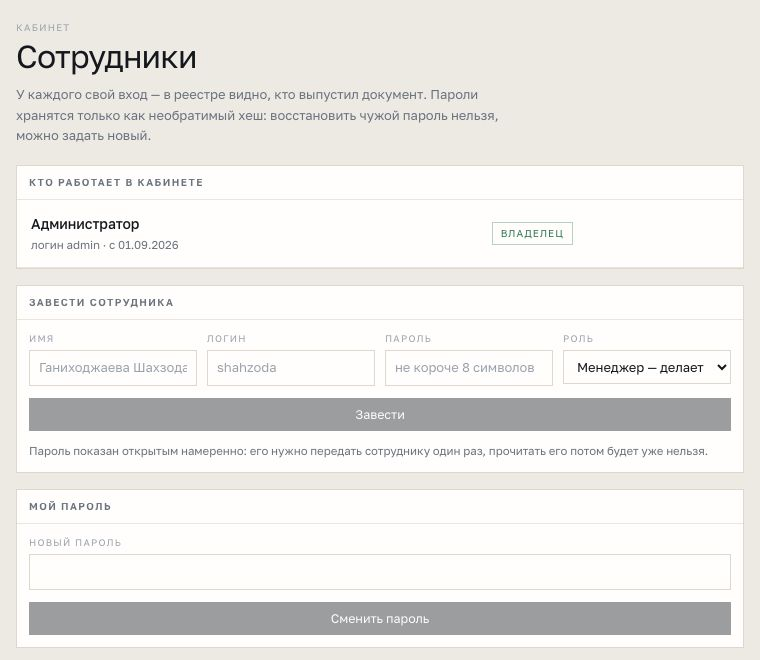
Счёт за распознавание и генерацию приходит напрямую владельцу ключа. Значит, и решение «взять модель подороже и поточнее или подешевле и попроще» принимает тот, кто платит, а не тот, кто писал код.
По умолчанию стоит самая сильная из доступных: рукописный набросок замерщика — задача на зрение, и разница между моделями здесь видна невооружённым глазом.
Считать расход в деньгах до подключения ключей было бы гаданием: тариф зависит от выбранной модели и меняется у провайдеров несколько раз в год. Поэтому считаем в том, что не меняется — в количестве обращений. Умножить на свой тариф компания сможет сама в тот день, когда вставит ключ.
| Статья | На одно КП | На 30 КП в месяц | Когда не тратится вовсе |
|---|---|---|---|
| Расчёт раскладки | 0 обращений | 0 | Всегда. Считает браузер менеджера. |
| Спецификация и цена | 0 обращений | 0 | Всегда. Арифметика на той же странице. |
| План объекта | 0 обращений | 0 | Всегда. Векторный чертёж рисуется кодом. |
| 3D-модель в КП | 0 обращений | 0 | Всегда. Сцена собирается у клиента в браузере. |
| PDF документа | 0 обращений | 0 | Всегда. Собирается сервером сайта. |
| Чтение наброска | 1 обращение | до 30 | Когда габариты вводят руками — а это большинство повторных объектов. |
| Фотореалистичный кадр | 1 обращение | до 30 | Когда в КП идёт кадр 3D-сцены без фотореализма. |
| Хранилище | запись реестра | 30 записей | Объём измеряется килобайтами: в реестре лежит ввод формы, а не готовые страницы. |
И оба необязательные. КП, сделанное без фотографии наброска и без фотореализма, ничего не стоит сверх уже оплаченного хостинга.
Чтение наброска: одна фотография листа плюс инструкция на 585 слов. Ответ — структура на 17 полей, без свободного текста.
Кадр: описание сцены на восемь строк плюс снимок 3D-модели как референс.
Чтение наброска — около трёх минут: модель разбирает почерк, а не просто отвечает. Кадр — 60–90 секунд.
Всё остальное — доли секунды, потому что считается на месте.
| Ключи компании | Счёт приходит RAX PRO напрямую от провайдера. Выбор модели — за компанией. Работает круглосуточно и не зависит ни от чьего ноутбука. |
| Мост на подписке | За обращение не платится ничего: работа идёт на уже оплаченной подписке владельца. Ограничение — мак должен быть включён. |
Тарифы провайдеров в этой полосе намеренно не названы: они меняются, и подставлять сегодняшнее число в документ, который будут читать через полгода, — ровно та ошибка, ради которой писалась приёмка.
Шесть шагов от входа до файла у клиента · что делать, когда приёмка красная · шпаргалка на один экран.
Страница закрыта от индексации: в поиске её нет. Черновик сохраняется в браузере — можно закрыть вкладку, уехать на замер и вернуться к тому же документу.
Три поля: клиент, тип стеллажа, язык документа — русский или узбекский. Язык переключает весь документ целиком, а не только заголовки.
Торговый, набивной и мезонин требуют ввести цены руками: прайса на них компания не давала. Генератор скажет об этом сразу при выборе типа, а не на последнем шаге.
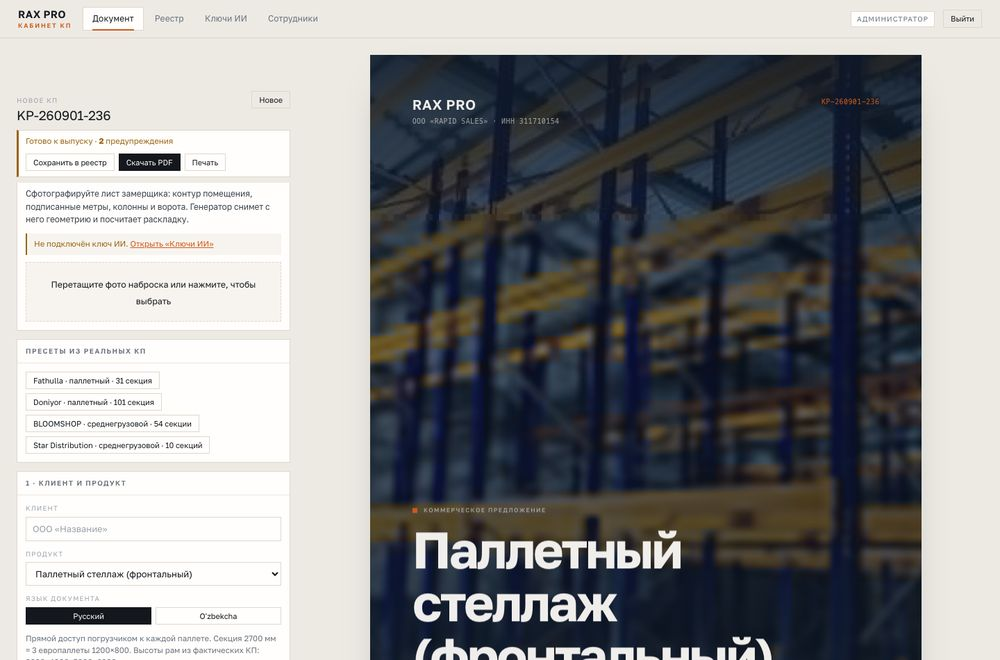
| Пресет | Тип и объём | Для чего он нужен |
|---|---|---|
| Fathulla | Паллетный · 31 секция | Небольшой объект. Быстро проверить, что цены за единицу ещё живые. |
| Doniyor | Паллетный · 101 секция | Крупный объект. На нём заметнее всего расхождение в цене рамы. |
| BLOOMSHOP | Среднегрузовой · 54 секции | Непаллетный тип: полки вместо мест, настил в спецификации. |
| Star Distribution | Среднегрузовой · 10 секций | Самый маленький заказ в архиве — проверка на краю диапазона. |
Форма: клиент, помещение, геометрия, цены, условия. Полос ввода девять, все с подсказками.
Документ целиком, каким его увидит клиент: обложка, что он получает, план, модель, спецификация, компания, условия.
Полоса приёмки. Всегда на виду, всегда знает текущее состояние документа, кнопки выпуска — там же.
Этот шаг заменил собой ожидание проектировщика. Раньше между замером и КП стоял человек с 3ds Max и очередью задач. Теперь между ними одна кнопка.
| Поле | Что вводить |
|---|---|
| Ширина и глубина | Габариты помещения в миллиметрах, с замера. |
| Высота потолка | До нижней точки: балки перекрытия, спринклеры, воздуховод. |
| Техника | Ричтрак, штабелёр или вилочный погрузчик. Отсюда берётся ширина прохода. |
| Длина балки | 2700 мм — три европаллеты, 3300 мм — четыре. |
| Высота и вес паллеты | Что реально хранит клиент. Высота задаёт шаг яруса. |
| Глубина ряда | 1050 мм одиночный ряд, 2150 мм спаренный. |
| Шаг колонн X и Y | Сетка колонн здания — ряды обходят их, а не проходят насквозь. |
| Колонна | Сторона квадрата колонны, обычно 400 мм. |
План с размерами прямо в документе и строка результата под ним: сколько рядов, сколько секций, сколько ярусов, какая высота рамы и какой процент площади занят стеллажами. Ниже — предупреждения, если они есть.
Значит, ярусы упёрлись в предел высоты рамы 6000 мм, а не в потолок. Под таким потолком имеет смысл считать второй уровень хранения. Это повод перезвонить клиенту с более дорогим и более выгодным ему решением, а не ошибка расчёта.
Пишут высоту до конька, а не до нижней точки. Под балками перекрытия и спринклерами теряется до метра — это целый ярус хранения, которого на объекте не окажется.
Ставят ричтрак «по умолчанию», а у клиента вилочный погрузчик. Проход вырастает с 2,9 до 3,8 метра, и посчитанные ряды на объект не встают.
Оставляют шаг колонн по умолчанию, не спросив у замерщика. Ряд проходит сквозь колонну только на бумаге.
Заполнение площади стеллажами для паллетного склада обычно выходит в диапазоне 30–40 %. Если генератор показал 15 % — скорее всего, перепутаны ширина и глубина или поставлена не та техника. Если 60 % — проверьте, не забыли ли отметить зоны приёмки и упаковки.
Необязательный шаг, который экономит больше всего времени. Замерщик рисует склад ручкой на листе: контур, подписанные метры, квадратики колонн, стрелку на ворота. Раньше менеджер переносил это в форму руками и обводил контур мышью.
JPG, PNG или WEBP до 6 МБ. Скриншот из галереи телефона подойдёт. Перетащить в рамку или выбрать файлом.
Кнопка честно пишет: «Читаю набросок… до 3 минут». Это не зависание — модель разбирает почерк.
Список всего прочитанного дословно. Сверить с листом и нажать «Перенести в форму».
| Контур | Честный многоугольник со скосом, нишей или вырезом — в этом и есть ценность наброска. |
| Колонны | Только те, что реально нарисованы. Регулярную сетку выдумывать запрещено. |
| Ворота | Центр по контуру и ширина проёма. |
| Ряды | Подписи как есть: «A blok 26.6 metr», глубина «215 sm», ширины секций подряд. |
| Зоны | Упаковка, приёмка, лестница, офис, проезд — участки, которые стеллажами не занимают. |
| Числа плана | Шаг секции, глубина ряда, ширина прохода, потолок, ярусы, длина балки, техника. |
Подписанный участок под упаковку или приёмку — это площадь, которую стеллажами не занимают. Не отметишь — расчёт займёт её секциями, и счёт клиенту будет завышен. Клиент это заметит на объекте, а не в КП.
| Что написано на листе | Как понимает модель | Почему так |
|---|---|---|
| 45 м · 45м · 45.5 | 45 000 мм | Всё приводится к миллиметрам: дальше считает ядро, а оно знает одну единицу. |
| 215 sm | 2 150 мм | Спаренный ряд. Узбекские замерщики пишут в сантиметрах. |
| 270 sm | 2 700 мм | Шаг секции — он же длина балки под три европаллеты. |
| A blok 26.6 metr | Ряд «A blok», 26 600 мм | Подпись сохраняется как есть — менеджер узнаёт её на листе. |
| Qadoqlash zonasi | Зона упаковки | Участок исключается из раскладки, иначе счёт будет завышен. |
| 45000 | 45 000 мм | Число больше 1000 считается уже миллиметрами. |
«Ничего не придумывай. Пустое поле лучше выдуманного числа: по этому наброску компания выставит клиенту счёт на сотни миллионов сум». Поэтому модель обязана вернуть ещё два списка: что она реально прочитала на листе дословно и что вызвало у неё сомнение. Менеджер сверяет именно их, а не готовые числа в форме.
В документе живёт трёхмерная модель именно этой расстановки. Её можно крутить — и менеджеру в кабинете, и клиенту по ссылке с телефона.
Помещение в метрах и высота потолка · число рядов и ярусов · синие рамы и оранжевые балки, как на объектах RAX PRO · груз на европаллетах в стретч-плёнке · названная техника в проходе · линейные светодиоды под потолком · промышленная архитектурная съёмка, без людей, без текста, без логотипов.
Кнопка «сцена для Blender» выгружает ту же сцену файлом. Локальный прогон даёт три кадра высокого качества: общий вид, взгляд вдоль прохода и фасад ряда. На сервере это не работает и не должно — это ручной шаг для баннера или каталога.
Подставлены значения, вычисленные из фактических КП. Правьте их, когда завод меняет прайс, и сверяйтесь по пресету: разошлось больше чем на 5 % — значит, цены пора обновить.
Процент нельзя поставить без причины — печать заблокируется. Причина попадает в документ рядом со скидкой: клиент видит, за что получил цену, и не считает её случайной.
Одна схема оплаты, а не две. Срок поставки в часах. Обе проверки блокирующие.
Полоса вверху: красная — печать заблокирована и замечания перечислены ниже; жёлтая — выпустить можно, но чего-то не хватает; зелёная — замечаний нет.
Файл собирает сервер — поля и шрифты одинаковые у всех сотрудников, с любого компьютера. Имя файла — номер КП.
Копируется в буфер сразу. Открывается без пароля, работает с телефона, показывает план и трёхмерную модель, которую можно покрутить. Предложение целиком лежит в самой ссылке: на сервере не хранится, не протухает, а часть после решётки вообще не уходит с устройства клиента.
Обычный диалог печати, если документ нужен на бумаге прямо сейчас.
Номер, клиент, продукт, геометрия, спецификация, сумма и автор. Так у компании появляется история предложений, которой сейчас нет: сколько выпущено, на какую сумму, кем и чем закончилось.
Закупщику, который подшивает документы, и в тендер. Файл одинаковый у всех сотрудников: поля и шрифты собирает сервер, а не браузер конкретного человека.
Директору и собственнику — тем, кто читает с телефона. В ссылке живёт 3D-модель, которую можно покрутить: это единственный формат, где видно, как встанет их склад.
На встречу и на объект. Печатная версия — тот же документ, а не отдельная вёрстка.
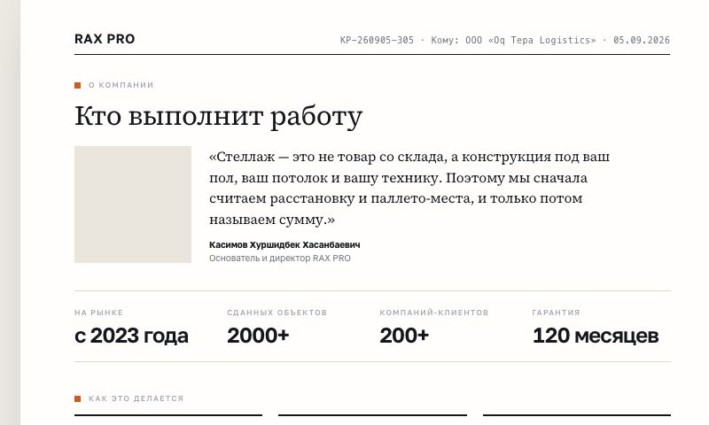
«Кто выполнит работу», сертификаты, этапы, гарантия, что входит в поставку — собираются из справочника компании. Стаж считается от года основания, число объектов и клиентов берётся из одного места.
Поменялись реквизиты, сертификат или срок гарантии — правится одна строка справочника, и они меняются сразу во всех будущих КП. Именно это и не работало раньше: факты жили в десятке копий Word-файла.
Красная полоса не означает поломку. Она означает, что в документе есть ровно то, что уже уезжало клиентам раньше. Ниже — что именно делать по каждому замечанию.
| Что говорит приёмка | Что произошло | Что сделать |
|---|---|---|
| Не указан клиент | Поле пустое или в нём одни кавычки. | Вписать название так, как оно пойдёт в договор. |
| Замков не вдвое больше балок | Спецификацию правили руками. | Нажать «Рассчитать раскладку» заново — числа пересоберутся из геометрии. |
| Рядов больше, чем секций | Геометрия введена вручную и невозможна. | Проверить два поля: рядов и секций всего. Секций всегда больше. |
| Ярусов меньше 1 или больше 6 | Значение вне рабочего диапазона линейки. | Вернуться к расчёту раскладки: ярусы считаются из потолка, а не назначаются. |
| Две схемы оплаты сразу | В тексте упомянуты обе. | Оставить одну — ту, о которой договорились с клиентом. |
| Скидка без причины | Поставлен процент, не выбрано основание. | Выбрать причину из пяти. «Решение директора» требует комментария текстом. |
| Нулевая цена за единицу | У типа «цена под проект» нет прайса. | Ввести цены руками — по торговому, набивному и мезонину прайса у компании нет. |
| Размер в пять и более цифр в тексте | В свободном тексте что-то вроде «33000×1200». | Проверить: балка такой длины не бывает. Скорее всего, лишний ноль. |
| Опыт или число клиентов в тексте | Факт компании вписан руками. | Убрать число из текста — оно подставится из справочника само и будет одинаковым во всех КП. |
| Нет плана объекта | Раскладка не рассчитана и план не загружен. | Рассчитать раскладку. Это одна из двух страниц, ради которых клиент открывает файл. |
| Нет рендера расстановки | Кадр не снят и картинка не загружена. | Снять кадр из 3D-модели одной кнопкой. |
| Скидка больше 25 % | Больше четверти суммы. | Согласовать с директором и выпускать осознанно. |
Сначала снимите блокирующие замечания сверху вниз — они перечислены под полосой в том же порядке, в каком идут по документу. Потом нажмите «Рассчитать раскладку» ещё раз: большинство замечаний по спецификации снимаются этим одним действием, потому что числа пересобираются из геометрии. И только после этого правьте текст руками — вручную в документе правится ровно то, чего нет в расчёте: комментарий к скидке и свободные абзацы.
Зелёная полоса на паллетном стеллаже достигается за пять минут: клиент, тип, габариты, кнопка раскладки, цены, условия, кадр. Всё остальное документ соберёт сам.
Не править спецификацию руками, чтобы «подогнать сумму». Скидка для этого и существует — с причиной, видимой клиенту. Ручная правка ломает связь между планом и сметой, а это ровно то, за что клиент перестаёт верить документу.
Задание на чтение наброска дословно · схема ответа · задание на кадр · шесть типов, шесть выпущенных КП с реальными числами.
Это тот самый текст, который уходит вместе с фотографией. Он не про вежливость и не про «будь внимателен» — каждая строка закрывает конкретную ошибку, которую модель делала на прогонах.
«Ты читаешь фотографию рукописного наброска складского помещения, сделанного замерщиком компании RAX PRO (металлические стеллажи, Ташкент). Твоя работа — снять с листа геометрию помещения И расстановку рядов, как её задумал замерщик, и перевести всё в миллиметры.
Лист бывает двух видов, и оба нужно уметь читать: пустой контур с габаритами — и готовый план расстановки, где прогоны уже подписаны («A blok 26.6 metr», «B blok»), рядом стоит глубина ряда («215 sm»), ширина секции («240 sm»), ширина прохода и подписанные участки под упаковку и приёмку. Второй вид встречается чаще.»
| № | Правило | Зачем оно там |
|---|---|---|
| 1 | Все размеры возвращай в миллиметрах. На листах пишут по-разному: «45 м», «45м», «45000», «45.5», «24 метра», «215 sm», «270 sm». 45 м → 45000; 215 sm → 2150. Число больше 1000 считай уже миллиметрами. | Замерщики пишут в метрах, сантиметрах и миллиметрах на одном листе. Без правила ответ приходил в смеси единиц. |
| 2 | Контур — по часовой стрелке от угла, ближайшего к левому нижнему. Первая точка [0,0], последнюю не повторяй. Для прямоугольника ровно 4 точки. Если есть скос, ниша, выступ или вырез — обведи их честно, это и есть ценность наброска. | Иначе модель возвращала прямоугольник вместо реального помещения — и вся ценность фотографии терялась. |
| 3 | Колонны: центр в миллиметрах и сторона квадрата, обычно 400 мм. Ставь только те, что реально нарисованы. Не выдумывай регулярную сетку, если нарисованы две колонны. | Модель достраивала «логичную» сетку 6×6 там, где её не было. Ряды после этого обходили несуществующие препятствия. |
| 4 | Ворота или проёмы: центр по контуру и ширина, по умолчанию 3000 мм. | У ворот нельзя ставить стеллаж — это влияет на раскладку. |
| 5 | Ряды стеллажей, если они нарисованы: подпись с листа как есть («A blok», «1-qator»), концы оси прогона, глубина, ширины секций подряд, если расписаны поштучно. Не выдумывай ряды, которых на листе нет: пустой список честнее придуманной расстановки. | Главное правило всей системы, повторённое на языке этой задачи. |
| 6 | Зоны, которые стеллажами НЕ занимают: «Qadoqlash zonasi» (упаковка), «yuk kirish joyi» (приёмка), «Zina» (лестница), офис, проезд. Эти участки решают, сколько секций встанет: не отметишь — расчёт займёт их стеллажами и счёт клиенту будет завышен. | Листы приходят на узбекском. Подписи перечислены прямо в задании, чтобы модель их узнавала. |
| 7 | Шаг секции, если он подписан один на весь план (обычно 2400, 2700 или 3300). Глубина ряда и ширина рабочего прохода — если подписаны. Чего нет на листе — null. | Пустое поле кабинет показывает как «не найдено», и менеджер вводит сам. Выдуманное — молча уедет в счёт. |
| 8 | Режим: «rows», если прогоны идут через зал параллельно; «perimeter», если стеллажи стоят вдоль стен, а середина оставлена под проезд. Не понял — null. | Два принципиально разных типа складов, и раскладка у них разная. |
| № | Правило | Зачем оно там |
|---|---|---|
| 9 | Высота потолка в миллиметрах, если она подписана. Если нет — null. Не угадывай. | От потолка считаются ярусы. Угаданный потолок — это угаданная половина спецификации. |
| 10 | Тип стеллажа, если он подписан или очевиден: паллетный фронтальный, набивной, среднегрузовой, архивный, торговый, мезонин. Если не написано — null. | Тип задаёт движок раскладки. Ошибка здесь стоит всего расчёта. |
| 11 | Число ярусов балок, длина балки (2700 или 3300) и техника (ричтрак, погрузчик, штабелёр) — если подписаны. | Эти три величины замерщик часто помечает прямо на листе. Забирать их руками — терять минуты на каждом КП. |
| 12 | Название компании клиента, если оно написано на листе. | Подставляется в шапку — то самое поле, которое в КП Rapid Sales осталось пустым. |
| 13 | Список того, что ты реально прочитал на листе, дословно: каждая надпись, каждое число с его подписью. Это то, по чему менеджер проверит распознавание. | Ключевое поле всей схемы. Менеджер сверяет с листом именно его, а не готовые числа. |
| 14 | Что вызвало сомнение: неразборчивая цифра, отсутствующий размер, противоречие. Коротко, по делу. | Модель обязана признаваться в неуверенности, а не сглаживать её. |
| 15 | Уверенность: high — контур и оба габарита читаются уверенно; medium — часть чисел пришлось выводить; low — это скорее догадка. | Кабинет превращает это в цветную плашку над формой. |
«Ничего не придумывай. Пустое поле лучше выдуманного числа: по этому наброску компания выставит клиенту счёт на сотни миллионов сум.»
Модель не отвечает текстом. Она обязана вернуть структуру из 17 полей, и кабинет отказывается принимать всё, что в неё не укладывается. Свободный текст в документ попасть не может физически.
Основной — Claude: задача на зрение, рукописный набросок он читает лучше. Запасной — Gemini: если у компании подключён только он, распознавание всё равно работает. Ключи всегда берутся из хранилища компании, зашитых ключей в коде нет ни одного.
Просьба выполняется не всегда: модель добавляет пояснение до или после, оборачивает ответ в разметку, меняет имя поля. Жёсткая схема снимает весь этот класс проблем — ответ либо укладывается в неё, либо не принимается вовсе.
Промпт собирается не менеджером, а кодом — из тех же чисел, что ушли в спецификацию. Поэтому на картинке физически не может оказаться другое число рядов.
«Преврати эту 3D-схему склада в фотореалистичный снимок интерьера. Сохрани в точности ракурс, число рядов, ширину проходов, число ярусов и положение стеллажей — меняются только материалы, свет и детали.»
«Фотореалистичный интерьер современного складского комплекса, широкоугольный кадр от пола, высота камеры 1,7 м.»
В первом случае картинка наследует посчитанную геометрию. Во втором — нет, и это честно указано в самом задании. Второй путь оставлен как запасной для типов, у которых параметрической 3D-модели пока нет: набивной и мезонин.
| Помещение | «Помещение 45 на 24 метра, потолок 10,5 м, светлые стены, наливной бетонный пол с разметкой проездов.» |
| Расстановка | «В кадре 9 параллельных рядов металлических стеллажей (паллетные стеллажи), в каждом ярусе видно 3 уровня балок с паллетами.» |
| Цвет | «Рамы стеллажей — синяя порошковая окраска, балки — оранжевые, ровно как на объектах RAX PRO; груз на европаллетах в стретч-плёнке.» |
| Техника | «В проходе — ричтрак.» Подставляется та, которую выбрал менеджер, а не случайная. |
| Свет | «Линейные светодиодные светильники под потолком, нейтральный белый свет, мягкие тени, без пересветов.» |
| Стиль | «Промышленная архитектурная фотография, полный кадр в фокусе, без людей, без текста, без логотипов, без водяных знаков.» |
Генераторы охотно дорисовывают вывески и надписи — на любом языке и с любыми ошибками. В документе, где рядом стоит настоящий логотип RAX PRO, выдуманная вывеска на стене читается как подделка.
Если поле промпта отдать человеку, через неделю в нём окажется «красивый современный склад» — и картинка перестанет соответствовать смете. Здесь промпт не редактируется вовсе: каждая его строка подставляется из того же расчёта, что ушёл в спецификацию. Менеджер управляет картинкой единственным способом — меняя расчёт.
16:9, разрешение 2K — под ширину листа КП.
60–90 секунд вместе с импортом референса и скачиванием.
Ужимается до 1600 пикселей: иначе документ и PDF раздуваются на порядок.
Картинка вшивается в документ, а не ссылается на чужой сервер.
Проверка не на бумаге: через генератор прогнаны все шесть типов линейки, каждый — на своём реальном клиенте из архива компании. Ни один прогон не упал, ни в одном не осталось блокирующего замечания.
| Тип | Клиент | Номер | Паллето-мест | Итого с НДС, сум | Приёмка |
|---|---|---|---|---|---|
| Паллетный фронтальный | ООО «Oq Tepa Logistics» | КП-260905-305 | 1 692 | 1 264 488 960 | Готово · 1 замечание |
| Паллетный набивной | ООО «Muzlatgich Servis» | КП-260905-049 | 576 | 428 853 376 | Готово · 2 замечания |
| Среднегрузовой | ООО «BLOOMSHOP» | КП-260905-565 | — | 209 294 494 | Готово · 2 замечания |
| Архивный | ООО «Rapid Sales» | КП-260905-193 | — | 37 968 000 | Готово · 2 замечания |
| Торговый | Supermarket «Index» | КП-260905-238 | — | 195 059 200 | Готово · 2 замечания |
| Мезонин | ООО «Star Distribution» | КП-260905-140 | — | 321 651 904 | Готово · 2 замечания |
Ни одного про расчёт. Все одиннадцать — про комплектность документа, и оба вида снимаются одним действием менеджера:
Снимается нажатием «Рассчитать раскладку». В прогоне раскладку считали не для всех типов — параметрическая раскладка есть не у каждого.
Снимается кнопкой «Снять кадр в КП». В прогоне картинки намеренно не генерировали: проверялся расчёт, а не оформление.
Паллето-мест не бывает у среднегрузового, архивного, торгового и мезонина — там их и не должно быть. Первые три меряются полками, мезонин — квадратными метрами плиты. Генератор не подставляет им паллето-места «для красоты»: непаллетный тип обязан вернуть пустое поле, и регрессия это проверяет.
Фактическими документами подтверждён один тип из шести — паллетный фронтальный. У остальных пяти часть чисел выведена из геометрии, а не из чертежа: прайса и эталонных смет по ним компания не присылала. Все такие числа объявлены черновыми и показываются менеджеру списком. Суммы в таблице — рабочие, а не окончательные.
| Обложка | Номер, клиент, дата, срок действия, три главные цифры. |
| Что вы получаете | Те же цифры крупно плюс описание решения на языке клиента. |
| План объекта | Чертёж расстановки с размерами. Уникальная страница №1. |
| Решение | Кадр расстановки: фотореалистичный или из 3D-сцены. |
| Интерактивная модель | Живая 3D-сцена в ссылке для клиента. Уникальная страница №2. |
| Спецификация | Позиции, количества, цены, итог, НДС, цена за паллето-место. |
| За что вы платите | Структура суммы в процентах по позициям. |
| Кто выполнит работу | Компания, стаж, объекты, клиенты, гарантия, как это делается. |
| Сертификаты | Из справочника, без опечаток и без ручного ввода. |
| Этапы и условия | Сроки, оплата, что входит в поставку, что делает монтаж. |
Русский и узбекский. Меняется весь документ: заголовки, описания позиций, условия, названия единиц измерения и форма юридического лица. Узбекская версия — не перевод заголовков поверх русского текста.
Спецификацию и цену за место. Ему нужно сравнить вас с двумя другими поставщиками по одному числу — и теперь это число в документе есть.
План и картинку. Он проверяет, поместится ли это в его помещение и как оно будет выглядеть. Две страницы, ради которых открывают файл.
Реквизиты, сертификаты, гарантию и условия оплаты. Всё из справочника — значит, одинаково в КП, договоре и счёте.
«Стеллаж — это не товар со склада, а конструкция под ваш пол, ваш потолок и вашу технику. Поэтому мы сначала считаем расстановку и паллето-места, и только потом называем сумму.»
Касимов Хуршидбек Хасанбаевич · основатель и директор RAX PRO
Генератор продолжит работать — он не сломается. Но пять типов из шести останутся с черновыми числами, и каждое КП по ним придётся проверять руками. То есть вернётся ровно та работа, ради снятия которой он и написан.
Прислать прайс завода за единицу и одно эталонное КП на набивной. Две эти вещи закрывают половину очереди справа: цены перестают быть выведенными, а у второго по востребованности типа появляются проверенные формулы. Всё остальное можно добирать по ходу.
Пока предложение собирали копией прошлого файла, ошибка жила в шаблоне и уезжала к каждому следующему клиенту. Теперь документ вырастает из посчитанной расстановки: план, модель, спецификация и сумма — одно и то же число, показанное четырьмя способами. Менеджеру остаётся то, что машина не сделает, — разговор.